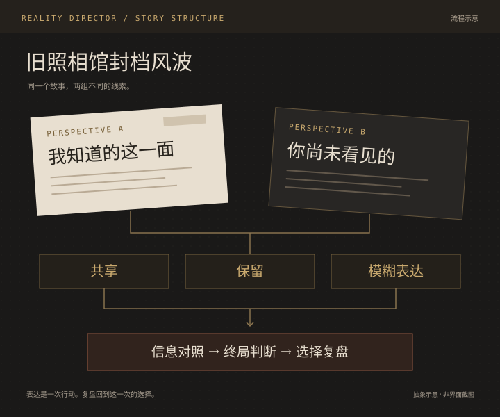

PERSPECTIVE A
从自己的线索出发
先知道角色眼前的情况，再选择要交出多少信息。表达本身成为一次行动。
在《旧照相馆封档风波》中，分别阅读角色线索，决定共享、保留，还是模糊表达。对照共同材料，完成两项判断，再回看这次表达如何影响彼此收到的信息。
预计 5–8 分钟 · 独自预览双角色 / 两人共用一台设备
当前为本机短篇，故事真相固定；表达改变共同信息与复盘路径。没有联机、实时 AI、定位或支付服务。

把双人体验的重心，放在信息如何被理解与表达。
你知道的，不一定是对方知道的。
你愿意说的，也不一定是全部。
两个人面对同一个故事，如果只是看相同的内容再点下一步，互动很容易停留在共同阅读。Reality Director 将线索拆给两个角色，让玩家先形成自己的理解，再决定如何表达，最后面对一次需要对照信息的判断。
先知道角色眼前的情况，再选择要交出多少信息。表达本身成为一次行动。
用另一组线索理解故事，并观察信息表达之后，双方还有哪些一致与分歧。
这次聚焦双角色短篇。独自体验时可以依次预览两个角色；两人体验时，在同一台设备上轮流阅读。两种方式都不需要邀请链接或在线房间。
《旧照相馆封档风波》用一段可完成的故事，串起阅读、表达、对照和判断。每个步骤都服务于下一次决定，结束后再回看这一轮的实际选择。
进入两个角色各自的阅读段落，先理解自己掌握的信息。
形成 / 各自的故事视角
在线索面前作出共享、保留或模糊表达的选择，推进故事。
留下 / 实际的信息处理选择
对照共同材料，完成两项判断，再分别核对判断与证据是否一致。
对照 / 预设故事的事实解释
查看实际表达、信息路径及判断解释，也可下载文本，留下一轮完整过程。
回看 / 这次为什么走到这里
将掌握的线索表达出来，让它进入双方的共同判断。
暂时留在自己的视角中，继续承担信息尚未共享的后果。
传递有所保留的说法，让对方获得部分信息与解释空间。
故事真相是固定的。表达影响双方收到的信息；两项判断独立与证据核对。复盘对应本轮操作，不展示虚构游玩数据。
从第一条线索开始 ↗保留双人故事的关系结构，同时收敛第一次体验的操作范围。
从一篇短故事进入，依次完成阅读、表达、对照和终局。一个人可以先理解玩法，两个人也可以在同一台设备上开始。
取舍 / 本轮不展开多人大厅、复杂组局或独立单人剧情，先验证双角色核心路径。
将信息处理收敛为三个可理解的选项，让用户知道自己正在决定什么。不同角色仍从不同线索出发，后续对照才有意义。
取舍 / 信息表达是故事动作，不用无关的点击数量或装饰性任务代替它。
结束页分别回看本轮表达带来的信息路径，以及两项判断与证据的关系。完整共享不代表判断必然正确，模糊表达后也仍可通过对照修正理解。
取舍 / 用明确的规则与实际记录建立因果，不把固定文案包装成实时导演分析。
设计方案与当前可操作的实现，分别说明。
《旧照相馆封档风波》支持角色线索阅读、三种表达选择、信息对照、终局判断，以及基于实际选择的复盘和本地导出。
原产品资料探索了多种人数形态、内容组织与状态流转。这些属于设计资产，不等于当前公开体验已实现全部服务。
下一步要验证：用户能否独立理解三种表达方式，是否能看出选择与后续反馈的联系，以及结束后能否解释自己的判断。当前没有公开用户成效或留存数据。
以上说明产品的复盘结构，不公开短篇答案，也不以故事结果推断玩家在现实中的关系或人格。
进入《旧照相馆封档风波》，从两个不同的视角走完一次判断。